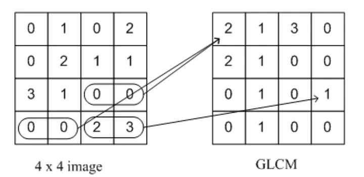
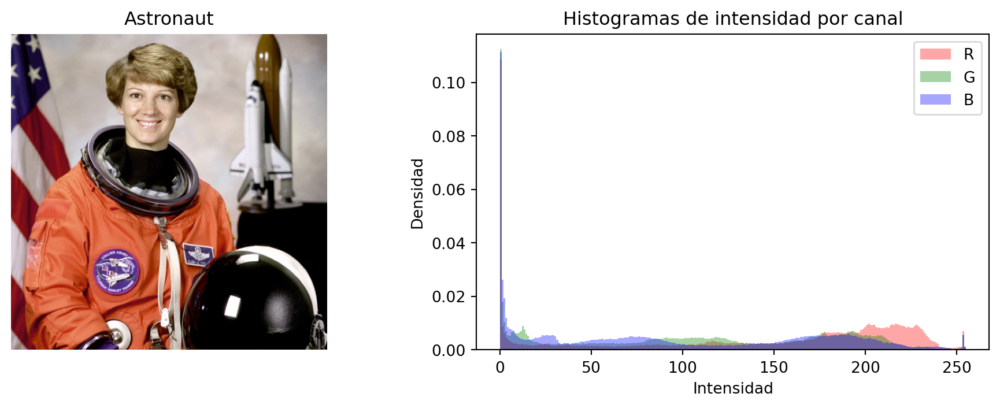
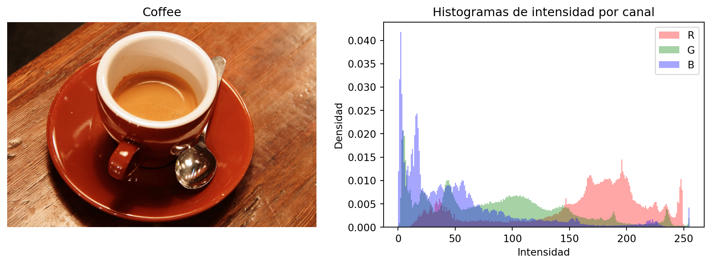
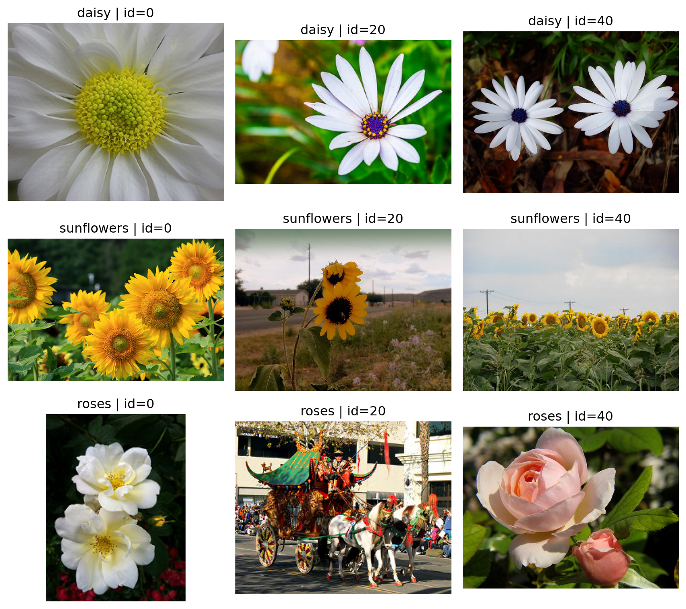

import numpy as np
import cv2
import matplotlib.pyplot as plt
from skimage import data, color, img_as_ubyte
from skimage.feature import graycomatrix, graycoprops
from scipy.stats import skewClase 1. Descriptores de imagen clásicos: GLCM, Momentos de Hu y Momentos de Color
Propósito de la clase
Esta clase introduce tres familias de descriptores clásicos de imagen que siguen siendo útiles para tareas de clasificación, recuperación y análisis exploratorio:
- GLCM (Gray-Level Co-occurrence Matrix) para describir textura.
- Momentos invariantes de Hu para describir forma.
- Momentos de color para resumir la distribución cromática.
La idea central es que una imagen puede describirse mediante un vector numérico de características. En esta primera clase se estudia qué mide cada descriptor, cómo se calcula y cómo implementarlo en Python.
Objetivos de aprendizaje
Al finalizar la sesión, el estudiante será capaz de:
- explicar la diferencia entre descriptores de textura, forma y color;
- calcular matrices de co-ocurrencia y propiedades derivadas de GLCM;
- obtener momentos de Hu a partir de una máscara o contorno;
- calcular momentos de color por canal;
- construir vectores de características básicos para una imagen;
- reconocer fortalezas y limitaciones de estos descriptores en clasificación de imágenes.
Origen y fundamento de los descriptores
GLCM
La idea de describir textura mediante dependencias espaciales entre niveles de gris se formalizó en el trabajo clásico de Haralick, Shanmugam y Dinstein (1973). En ese artículo se plantean características texturales calculadas a partir de la frecuencia con la que pares de intensidades aparecen con un desplazamiento espacial dado. Ese artículo es la referencia histórica central para GLCM.
Momentos invariantes de Hu
Los siete momentos invariantes de Hu provienen del artículo de Ming-Kuei Hu (1962). Su aporte fue construir combinaciones de momentos centralizados y normalizados que son invariantes a traslación, escala y rotación; el séptimo además cambia de signo ante reflexión.
Momentos de color
El uso de los primeros momentos estadísticos del color como descriptor global se consolidó en la literatura de recuperación de imágenes por contenido durante la década de 1990. Una referencia muy citada es Stricker y Orengo (1995), quienes emplean momentos de color como resumen compacto de la distribución cromática. En la práctica, suele usarse por canal el trío:
- media,
- desviación estándar,
- asimetría.
Idea general: una imagen como vector de características
Supongamos que tenemos una imagen y queremos clasificarla. En lugar de alimentar directamente todos sus pixeles a un algoritmo, podemos construir un vector como:
\[ \mathbf{x} = [\text{GLCM}_1, \ldots, \text{GLCM}_p, \text{Hu}_1, \ldots, \text{Hu}_7, \text{Color}_1, \ldots, \text{Color}_q] \]
Cada bloque resume un aspecto diferente:
- GLCM: textura local o regional;
- Hu: geometría global de la forma;
- Color moments: distribución tonal o cromática global.
Preparación del entorno en Python
Imágenes de ejemplo
Usaremos imágenes de ejemplo incluidas en scikit-image para ilustrar los cálculos.
img_color_1 = data.astronaut()
img_color_2 = data.coffee()
img_gray_1 = img_as_ubyte(color.rgb2gray(img_color_1))
img_gray_2 = img_as_ubyte(color.rgb2gray(img_color_2))
fig, ax = plt.subplots(2, 2, figsize=(10, 8))
ax[0, 0].imshow(img_color_1)
ax[0, 0].set_title("Astronaut")
ax[0, 0].axis("off")
ax[0, 1].imshow(img_color_2)
ax[0, 1].set_title("Coffee")
ax[0, 1].axis("off")
ax[1, 0].imshow(img_gray_1, cmap="gray")
ax[1, 0].set_title("Astronaut en gris")
ax[1, 0].axis("off")
ax[1, 1].imshow(img_gray_2, cmap="gray")
ax[1, 1].set_title("Coffee en gris")
ax[1, 1].axis("off")
plt.tight_layout()
plt.show()
1. GLCM: textura basada en co-ocurrencia
Intuición
La GLCM cuenta cuántas veces aparece un par de intensidades \((i, j)\) separado por una distancia y una dirección dadas. Si una textura tiene patrones repetitivos, su matriz de co-ocurrencia tendrá una estructura característica.
Formalmente, para una imagen cuantizada en \(L\) niveles, la entrada \((i,j)\) de la GLCM representa la frecuencia con la que un pixel con valor \(i\) aparece junto a otro con valor \(j\) según un desplazamiento especificado.
Construyendo la matriz de co-ocurrencia
Imagina una tabla con filas y columnas etiquetadas con todos los valores posibles de escala de grises (p. ej., 0–255). Cada celda representa la frecuencia con la que un par específico de niveles de gris aparece junto a un desplazamiento y dirección determinados. Por ejemplo, si la celda (50, 60) tiene un valor de 20, significa que el nivel de gris 50 aparece 20 veces junto a un píxel con intensidad 60 en el desplazamiento y dirección especificados.

Decisiones prácticas importantes
Antes de calcular GLCM conviene decidir:
- número de niveles de gris (
levels); - distancia o distancias;
- ángulo o ángulos;
- si la matriz será simétrica;
- si se normalizará.
Reducir el número de niveles suele ser útil para estabilizar el cálculo y reducir costo computacional.
Ejemplo básico con graycomatrix
# Cuantización simple a 32 niveles
levels = 32
img_q = (img_gray_1 / 256 * levels).astype(np.uint8)
img_q = np.clip(img_q, 0, levels - 1)
glcm = graycomatrix(
img_q,
distances=[1, 3],
angles=[0, np.pi/4, np.pi/2, 3*np.pi/4],
levels=levels,
symmetric=True,
normed=True
)
glcm.shape(32, 32, 2, 4)La salida tiene dimensiones:
\[ (\text{levels}, \text{levels}, \#\text{distancias}, \#\text{ángulos}) \]
Propiedades de Haralick más usadas
scikit-image implementa varias propiedades derivadas de la GLCM. Entre las más utilizadas están:
contrastdissimilarityhomogeneityASMenergycorrelation
props = ["contrast", "dissimilarity", "homogeneity", "ASM", "energy", "correlation"]
features_glcm = {}
for p in props:
values = graycoprops(glcm, p)
features_glcm[p] = values.mean()
features_glcm{'contrast': np.float64(9.26983641788257),
'dissimilarity': np.float64(1.3507421136631752),
'homogeneity': np.float64(0.6705625818198401),
'ASM': np.float64(0.028447296405896605),
'energy': np.float64(0.16849119255130862),
'correlation': np.float64(0.9468835125475412)}Características obtenidas a partir de la matriz de co-ocurrencia
Sea \(P(i,j)\) la matriz de co-ocurrencia de niveles de gris (GLCM) normalizada, de modo que sus elementos representan la probabilidad de observar un par de intensidades \(i\) y \(j\) en una cierta relación espacial. A partir de esta matriz pueden obtenerse diversas medidas estadísticas que describen propiedades de textura en la imagen.
Contrast
La característica contrast mide el grado de variación local en los niveles de gris. Se calcula como
\[ \text{Contrast} = \sum_{i,j} (i-j)^2 P(i,j) \]
y asigna mayor peso a las parejas de píxeles con diferencias grandes de intensidad. Por ello, valores altos de contraste suelen asociarse con texturas más marcadas o con cambios bruscos de intensidad.
Dissimilarity
La dissimilarity también cuantifica diferencias entre intensidades vecinas, pero usando una penalización lineal:
\[ \text{Dissimilarity} = \sum_{i,j} |i-j| P(i,j) \]
Esta medida crece cuando los pares de píxeles tienden a presentar distintos niveles de gris, aunque es menos sensible que el contraste a diferencias extremas.
Homogeneity
La homogeneity evalúa qué tan concentrada está la GLCM alrededor de su diagonal principal, es decir, qué tanto predominan pares de píxeles con intensidades similares. Se define por
\[ \text{Homogeneity} = \sum_{i,j} \frac{P(i,j)}{1+(i-j)^2} \]
Cuando la mayoría de los valores de la matriz se ubican cerca de la diagonal, esta medida toma valores altos, lo que sugiere una textura más uniforme.
ASM
La medida ASM (Angular Second Moment) cuantifica la uniformidad de la distribución de probabilidades en la GLCM:
\[ \text{ASM} = \sum_{i,j} P(i,j)^2 \]
Si unas pocas entradas concentran gran parte de la probabilidad, el valor de ASM aumenta. Por ello, esta característica suele relacionarse con texturas regulares y poco dispersas.
Energy
La energy se define como la raíz cuadrada de ASM:
\[ \text{Energy} = \sqrt{\text{ASM}} \]
Al igual que ASM, describe la uniformidad o el orden de la textura. Valores altos indican una distribución más concentrada en pocos patrones de co-ocurrencia.
Correlation
La correlation mide el grado de dependencia lineal entre los niveles de gris de los pares de píxeles considerados. Su expresión es
\[ \text{Correlation} = \sum_{i,j} \frac{(i-\mu_i)(j-\mu_j)P(i,j)}{\sigma_i \sigma_j} \]
donde \(\mu_i\) y \(\mu_j\) representan las medias marginales, y \(\sigma_i\) y \(\sigma_j\) las desviaciones estándar marginales de la GLCM. Esta medida permite identificar si existe una relación sistemática entre las intensidades vecinas.
Interpretación general
En términos generales:
- contrast y dissimilarity describen la magnitud de las diferencias locales de intensidad;
- homogeneity indica qué tan similares son los niveles de gris de píxeles vecinos;
- ASM y energy miden la uniformidad o regularidad de la textura;
- correlation evalúa la dependencia estadística entre intensidades vecinas.
Estas características son ampliamente utilizadas en análisis de textura porque resumen distintos aspectos estructurales de una imagen a partir de la distribución espacial de sus niveles de gris.
Función reusable para extraer GLCM
def extract_glcm_features(
image_gray,
levels=32,
distances=(1, 3, 5),
angles=(0, np.pi/4, np.pi/2, 3*np.pi/4)
):
img_q = (image_gray / 256 * levels).astype(np.uint8)
img_q = np.clip(img_q, 0, levels - 1)
glcm = graycomatrix(
img_q,
distances=list(distances),
angles=list(angles),
levels=levels,
symmetric=True,
normed=True
)
props = ["contrast", "dissimilarity", "homogeneity", "ASM", "energy", "correlation"]
feats = []
names = []
for prop in props:
vals = graycoprops(glcm, prop)
for i, d in enumerate(distances):
for j, a in enumerate(angles):
feats.append(vals[i, j])
names.append(f"glcm_{prop}_d{d}_a{j}")
return np.array(feats, dtype=float), namesglcm_vec, glcm_names = extract_glcm_features(img_gray_1)
len(glcm_vec), glcm_names[:5](72,
['glcm_contrast_d1_a0',
'glcm_contrast_d1_a1',
'glcm_contrast_d1_a2',
'glcm_contrast_d1_a3',
'glcm_contrast_d3_a0'])Comentarios didácticos sobre GLCM
- GLCM funciona mejor cuando la textura es importante.
- Es sensible a cómo se haga la cuantización de niveles.
- La elección de distancias y ángulos cambia la información capturada.
- En imágenes muy grandes puede ser conveniente trabajar por parches o regiones.
2. Momentos invariantes de Hu: forma global
Idea básica de momentos
Los momentos de una imagen binaria o de una región describen cómo se distribuye su masa en el plano. A partir de los momentos espaciales, centrales y normalizados se construyen los siete invariantes de Hu.
En OpenCV, el flujo típico es:
- obtener una máscara o contorno;
- calcular
cv2.moments; - aplicar
cv2.HuMoments.
Construcción de una máscara simple
Para ilustrar la idea, segmentaremos aproximadamente el objeto principal mediante umbralización en escala de grises.
_, mask = cv2.threshold(img_gray_1, 110, 255, cv2.THRESH_BINARY)
fig, ax = plt.subplots(1, 2, figsize=(10, 4))
ax[0].imshow(img_gray_1, cmap="gray")
ax[0].set_title("Imagen en gris")
ax[0].axis("off")
ax[1].imshow(mask, cmap="gray")
ax[1].set_title("Máscara binaria")
ax[1].axis("off")
plt.tight_layout()
plt.show()
Cálculo de momentos de Hu
moments = cv2.moments(mask)
hu = cv2.HuMoments(moments).flatten()
huarray([ 1.08675575e-03, 6.86753193e-08, 9.57743180e-11, 1.70608565e-11,
3.86304811e-22, -6.43978504e-16, 5.71296096e-22])Los valores pueden variar en magnitud de manera extrema. Por ello es muy común usar una transformación logarítmica con signo:
\[ h'_k = -\operatorname{sign}(h_k) \log_{10}(|h_k| + \varepsilon) \]
def log_transform_hu(hu, eps=1e-12):
hu = np.asarray(hu, dtype=float)
return -np.sign(hu) * np.log10(np.abs(hu) + eps)
hu_log = log_transform_hu(hu)
hu_logarray([ 2.96386805, 7.16319299, 10.01423988, 10.74326166,
12. , -11.99972041, 12. ])Función reusable para Hu
def extract_hu_features(image_gray, threshold=110):
_, mask = cv2.threshold(image_gray, threshold, 255, cv2.THRESH_BINARY)
moments = cv2.moments(mask)
hu = cv2.HuMoments(moments).flatten()
hu_log = -np.sign(hu) * np.log10(np.abs(hu) + 1e-12)
names = [f"hu_{i+1}" for i in range(7)]
return hu_log.astype(float), nameshu_vec, hu_names = extract_hu_features(img_gray_1)
list(zip(hu_names, hu_vec))[('hu_1', np.float64(2.9638680525788126)),
('hu_2', np.float64(7.163192989003374)),
('hu_3', np.float64(10.014239880588148)),
('hu_4', np.float64(10.743261657891907)),
('hu_5', np.float64(11.99999999983223)),
('hu_6', np.float64(-11.999720413703225)),
('hu_7', np.float64(11.99999999975189))]Momentos de Hu (interpretación general)
Los momentos de Hu son un conjunto de siete descriptores construidos a partir de los momentos geométricos y momentos centrales de una imagen. Se utilizan para describir la forma de un objeto y tienen la propiedad de ser invariantes ante ciertas transformaciones geométricas, en particular traslación, escala y rotación.
En términos generales, la idea consiste en resumir la distribución espacial de los píxeles de un objeto mediante cantidades numéricas que capturan propiedades globales de su forma.
1. Momentos geométricos
Sea \(f(x,y)\) la intensidad de la imagen en la posición \((x,y)\). El momento geométrico de orden \(p+q\) se define como
\[ m_{pq} = \sum_x \sum_y x^p y^q f(x,y) \]
En imágenes binarias, donde el objeto toma valor 1 y el fondo 0, estos momentos describen directamente la geometría del objeto.
Por ejemplo:
- \(m_{00}\) representa el área del objeto;
- \(m_{10}\) y \(m_{01}\) permiten localizar su centroide.
2. Centroide del objeto
A partir de los momentos geométricos de primer orden, el centroide se obtiene como
\[ \bar{x} = \frac{m_{10}}{m_{00}}, \qquad \bar{y} = \frac{m_{01}}{m_{00}} \]
El centroide representa el “centro de masa” del objeto.
3. Momentos centrales
Para eliminar el efecto de la posición del objeto en la imagen, se calculan los momentos centrales:
\[ \mu_{pq} = \sum_x \sum_y (x-\bar{x})^p (y-\bar{y})^q f(x,y) \]
Estos momentos ya no dependen de la traslación del objeto, porque se calculan respecto a su propio centroide.
4. Momentos centrales normalizados
Para hacer que la descripción también sea invariante a cambios de escala, se definen los momentos centrales normalizados:
\[ \eta_{pq} = \frac{\mu_{pq}}{\mu_{00}^{\gamma}} \]
donde
\[ \gamma = \frac{p+q}{2} + 1 \]
Los valores \(\eta_{pq}\) son la base para construir los momentos invariantes de Hu.
5. Los siete momentos de Hu
A partir de los momentos normalizados, Hu propuso siete combinaciones algebraicas que permanecen invariantes ante traslación, escala y rotación.
Primer momento de Hu
\[ \phi_1 = \eta_{20} + \eta_{02} \]
Segundo momento de Hu
\[ \phi_2 = (\eta_{20} - \eta_{02})^2 + 4\eta_{11}^2 \]
Tercer momento de Hu
\[ \phi_3 = (\eta_{30} - 3\eta_{12})^2 + (3\eta_{21} - \eta_{03})^2 \]
Cuarto momento de Hu
\[ \phi_4 = (\eta_{30} + \eta_{12})^2 + (\eta_{21} + \eta_{03})^2 \]
Quinto momento de Hu
\[ \phi_5 = (\eta_{30} - 3\eta_{12})(\eta_{30} + \eta_{12}) \left[ (\eta_{30} + \eta_{12})^2 - 3(\eta_{21} + \eta_{03})^2 \right] + (3\eta_{21} - \eta_{03})(\eta_{21} + \eta_{03}) \left[ 3(\eta_{30} + \eta_{12})^2 - (\eta_{21} + \eta_{03})^2 \right] \]
Sexto momento de Hu
\[ \phi_6 = (\eta_{20} - \eta_{02}) \left[ (\eta_{30} + \eta_{12})^2 - (\eta_{21} + \eta_{03})^2 \right] + 4\eta_{11}(\eta_{30} + \eta_{12})(\eta_{21} + \eta_{03}) \]
Séptimo momento de Hu
\[ \phi_7 = (3\eta_{21} - \eta_{03})(\eta_{30} + \eta_{12}) \left[ (\eta_{30} + \eta_{12})^2 - 3(\eta_{21} + \eta_{03})^2 \right] - (\eta_{30} - 3\eta_{12})(\eta_{21} + \eta_{03}) \left[ 3(\eta_{30} + \eta_{12})^2 - (\eta_{21} + \eta_{03})^2 \right] \]
6. Interpretación general
Los momentos de Hu no suelen interpretarse uno por uno de manera tan directa como ocurre con algunas características de la GLCM. Más bien, funcionan como un vector de características de forma que resume propiedades globales del objeto.
En términos generales:
- \(\phi_1\) y \(\phi_2\) se relacionan con la dispersión global de la forma;
- \(\phi_3\) y \(\phi_4\) capturan aspectos asociados con asimetrías y distribución de masa;
- \(\phi_5\), \(\phi_6\) y \(\phi_7\) describen relaciones más complejas de la geometría del contorno y la estructura de la forma.
En aplicaciones prácticas, estos siete valores se utilizan conjuntamente para comparar objetos o para alimentar algoritmos de clasificación.
7. Propiedad de invariancia
La principal ventaja de los momentos de Hu es que permiten describir objetos de manera robusta cuando cambian su posición, tamaño u orientación en la imagen. Esto significa que dos objetos con la misma forma básica producirán valores similares aunque uno esté desplazado, escalado o rotado respecto al otro.
Por ello, los momentos de Hu son útiles en tareas como:
- reconocimiento de formas;
- clasificación de objetos;
- análisis de contornos;
- visión por computadora y procesamiento digital de imágenes.
8. Consideración práctica
En la práctica, los valores de los momentos de Hu pueden variar mucho en magnitud, por lo que frecuentemente se aplica una transformación logarítmica para facilitar su análisis numérico y visualización:
\[ h_i = -\operatorname{sign}(\phi_i)\log_{10}(|\phi_i|) \]
Esta transformación ayuda a trabajar con valores muy pequeños y a comparar mejor los descriptores.
Resumen
El procedimiento para obtener los momentos de Hu puede resumirse así:
- Calcular los momentos geométricos \(m_{pq}\).
- Obtener el centroide \((\bar{x},\bar{y})\).
- Calcular los momentos centrales \(\mu_{pq}\).
- Normalizar para obtener \(\eta_{pq}\).
- Construir las siete combinaciones invariantes propuestas por Hu.
De este modo, se obtiene un conjunto compacto de características que describen la forma global de un objeto de manera invariante ante transformaciones geométricas básicas.
Comentarios didácticos sobre Hu
- Resume forma global, no textura fina.
- Requiere una segmentación o máscara razonable.
- En imágenes reales, la calidad de la máscara afecta mucho el resultado.
- Son útiles cuando la clase depende de la geometría del objeto.
3. Momentos de color
Idea básica
Los momentos de color resumen la distribución de intensidades en cada canal. El esquema más habitual usa, por canal:
- media,
- desviación estándar,
- asimetría.
Si se trabaja con RGB, se obtienen 9 características:
\[ [\mu_R, \sigma_R, s_R, \mu_G, \sigma_G, s_G, \mu_B, \sigma_B, s_B] \]
Implementación en Python
def extract_color_moments(image_rgb):
feats = []
names = []
channel_names = ["R", "G", "B"]
for idx, cname in enumerate(channel_names):
channel = image_rgb[:, :, idx].astype(np.float64).ravel()
feats.extend([
channel.mean(),
channel.std(ddof=0),
skew(channel, bias=False)
])
names.extend([
f"color_mean_{cname}",
f"color_std_{cname}",
f"color_skew_{cname}"
])
return np.array(feats, dtype=float), namescolor_vec, color_names = extract_color_moments(img_color_1)
list(zip(color_names, np.round(color_vec, 4)))[('color_mean_R', np.float64(141.5625)),
('color_std_R', np.float64(82.0389)),
('color_skew_R', np.float64(-0.6208)),
('color_mean_G', np.float64(105.7594)),
('color_std_G', np.float64(76.6155)),
('color_skew_G', np.float64(-0.0085)),
('color_mean_B', np.float64(96.4751)),
('color_std_B', np.float64(77.8534)),
('color_skew_B', np.float64(0.2254))]Interpretación guiada con histogramas RGB
Para enlazar los valores numéricos con una lectura visual rápida, podemos comparar dos imágenes y observar:
- desplazamiento del histograma por canal (relacionado con la media);
- anchura de la distribución (relacionada con la desviación estándar);
- presencia de colas (relacionada con la asimetría).
def plot_rgb_histograms_with_moments(image_rgb, title="Imagen"):
fig, axes = plt.subplots(1, 2, figsize=(10, 3.8))
# Imagen
axes[0].imshow(image_rgb)
axes[0].set_title(title)
axes[0].axis("off")
# Histogramas por canal
colors = ["r", "g", "b"]
labels = ["R", "G", "B"]
for c, lbl in zip(colors, labels):
channel = image_rgb[:, :, labels.index(lbl)].ravel()
axes[1].hist(channel, bins=256, range=(0, 255), density=True,
alpha=0.35, color=c, label=lbl)
axes[1].set_title("Histogramas de intensidad por canal")
axes[1].set_xlabel("Intensidad")
axes[1].set_ylabel("Densidad")
axes[1].legend(loc="upper right")
plt.tight_layout()
plt.show()
vals, names = extract_color_moments(image_rgb)
print(title)
for n, v in zip(names, vals):
print(f" {n}: {v:.4f}")
plot_rgb_histograms_with_moments(img_color_1, "Astronaut")
plot_rgb_histograms_with_moments(img_color_2, "Coffee")
Astronaut
color_mean_R: 141.5625
color_std_R: 82.0389
color_skew_R: -0.6208
color_mean_G: 105.7594
color_std_G: 76.6155
color_skew_G: -0.0085
color_mean_B: 96.4751
color_std_B: 77.8534
color_skew_B: 0.2254
Coffee
color_mean_R: 158.5691
color_std_R: 62.9729
color_skew_R: -0.8873
color_mean_G: 85.7940
color_std_G: 60.9581
color_skew_G: 0.5802
color_mean_B: 51.4847
color_std_B: 52.9357
color_skew_B: 1.6492Con esta visualización, una lectura didáctica útil es:
- picos desplazados a la derecha en un canal \(\Rightarrow\) mayor media de ese canal;
- histogramas más anchos \(\Rightarrow\) mayor desviación estándar;
- colas pronunciadas hacia un extremo \(\Rightarrow\) mayor asimetría (positiva o negativa).
Variante en HSV
En varias aplicaciones resulta más interpretable usar HSV o Lab en lugar de RGB, sobre todo cuando interesa separar tono, saturación e intensidad.
img_hsv = cv2.cvtColor(img_color_1, cv2.COLOR_RGB2HSV)
img_hsv.shape(512, 512, 3)4. Comparación rápida entre imágenes
Ahora comparemos dos imágenes de ejemplo usando los tres tipos de descriptores.
g1, _ = extract_glcm_features(img_gray_1)
g2, _ = extract_glcm_features(img_gray_2)
h1, _ = extract_hu_features(img_gray_1)
h2, _ = extract_hu_features(img_gray_2)
c1, _ = extract_color_moments(img_color_1)
c2, _ = extract_color_moments(img_color_2)
print("Distancia Euclidiana GLCM:", np.linalg.norm(g1 - g2))
print("Distancia Euclidiana Hu:", np.linalg.norm(h1 - h2))
print("Distancia Euclidiana Color:", np.linalg.norm(c1 - c2))Distancia Euclidiana GLCM: 25.55148557353642
Distancia Euclidiana Hu: 23.94679096361307
Distancia Euclidiana Color: 62.80109738866211Estas distancias no deben interpretarse todavía como un clasificador, pero muestran que los descriptores convierten imágenes en vectores comparables numéricamente.
5. Un extractor unificado por imagen
def extract_classic_descriptors(image_rgb):
image_gray = img_as_ubyte(color.rgb2gray(image_rgb))
glcm_vec, glcm_names = extract_glcm_features(image_gray)
hu_vec, hu_names = extract_hu_features(image_gray)
color_vec, color_names = extract_color_moments(image_rgb)
vec = np.concatenate([glcm_vec, hu_vec, color_vec])
names = glcm_names + hu_names + color_names
return vec, namesvec, names = extract_classic_descriptors(img_color_1)
len(vec), names[-10:](88,
['hu_7',
'color_mean_R',
'color_std_R',
'color_skew_R',
'color_mean_G',
'color_std_G',
'color_skew_G',
'color_mean_B',
'color_std_B',
'color_skew_B'])6. Discusión: cuándo conviene cada descriptor
GLCM
Conviene cuando:
- la textura distingue clases;
- el color no es suficiente;
- hay patrones repetitivos como telas, hojas, suelos, superficies o tejidos.
Hu
Conviene cuando:
- la forma del objeto es relevante;
- se dispone de segmentación razonable;
- la clase depende más de silueta que de textura.
Color moments
Conviene cuando:
- las clases se distinguen por paleta cromática;
- se necesita un descriptor compacto y barato de calcular;
- no se requiere información espacial detallada.
7. Actividad sugerida en clase
- Seleccionar 3 categorías de imágenes.
- Extraer GLCM, Hu y momentos de color para 10 imágenes por categoría.
- Construir una tabla donde cada fila sea una imagen.
- Comparar qué descriptor parece separar mejor las clases.
- Discutir qué información pierde cada descriptor.
8. Ejercicio guiado
Implementa una función que reciba una lista de imágenes y devuelva una matriz X donde:
- cada fila corresponda a una imagen;
- cada columna corresponda a una característica.
Sugerencia:
def build_feature_matrix(images):
rows = []
for img in images:
vec, _ = extract_classic_descriptors(img)
rows.append(vec)
return np.vstack(rows)9. Mini ejemplo real (opcional)
Si quieres mostrar un caso con datos reales durante esta clase, puedes usar el material completo en:
Vista compacta de muestras por clase (si ya descargaste datos_ejemplo/flower_photos):
from pathlib import Path
FLOWERS_DIR = Path("datos_ejemplo") / "flower_photos"
classes = ["daisy", "sunflowers", "roses"]
if FLOWERS_DIR.exists():
fig, axes = plt.subplots(len(classes), 3, figsize=(9, 8))
for i, cls in enumerate(classes):
cls_paths = sorted([
p for p in (FLOWERS_DIR / cls).glob("*")
if p.suffix.lower() in {".jpg", ".jpeg", ".png"}
])
picks = [0, 20, 40]
for j, pos in enumerate(picks):
ax = axes[i, j]
if pos < len(cls_paths):
img_bgr = cv2.imread(str(cls_paths[pos]))
img = cv2.cvtColor(img_bgr, cv2.COLOR_BGR2RGB)
ax.imshow(img)
ax.set_title(f"{cls} | id={pos}")
ax.axis("off")
plt.tight_layout()
plt.show()
else:
print("No se encontro datos_ejemplo/flower_photos. Ejecuta el notebook de ejemplo real para descargar el dataset.")
10. Cierre conceptual
Los descriptores clásicos no sustituyen a los métodos modernos basados en aprendizaje profundo, pero siguen siendo valiosos por varias razones:
- son interpretables;
- requieren menos datos;
- permiten entender qué aspecto visual está usando el sistema;
- son ideales para cursos introductorios y para conjuntos de datos pequeños.
La siguiente clase tomará estos descriptores y construirá un flujo completo de trabajo para:
- fusionar características,
- escalar variables,
- reducir dimensionalidad con PCA,
- visualizar separabilidad entre clases.
11. Referencias y origen
- Haralick, R. M., Shanmugam, K., y Dinstein, I. (1973). Textural Features for Image Classification.
- Hu, M.-K. (1962). Visual Pattern Recognition by Moment Invariants.
- Stricker, M. A., y Orengo, M. (1995). Similarity of Color Images.
scikit-image: documentación degraycomatrixygraycoprops.- OpenCV: documentación de
momentsyHuMoments.
12. Tarea sugerida
Tomar un conjunto pequeño de imágenes organizadas por clase y preparar tres matrices de características:
- solo GLCM,
- solo Hu + color,
- fusión completa.
Esas matrices se usarán en la siguiente clase para PCA y análisis de separabilidad.